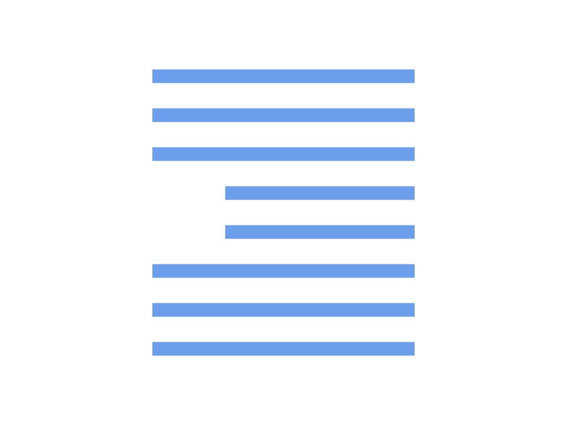
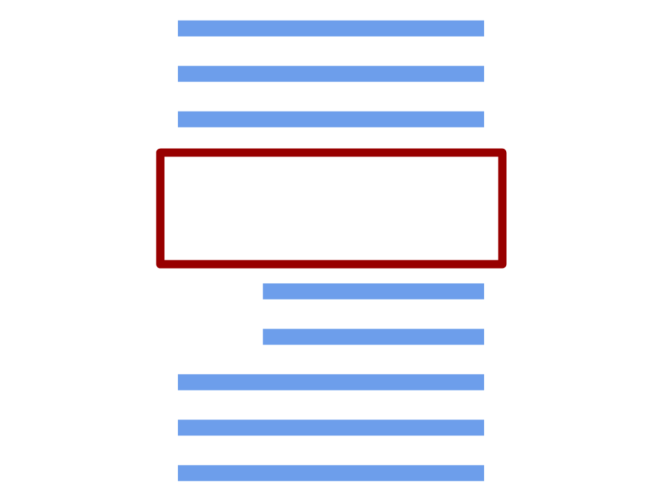
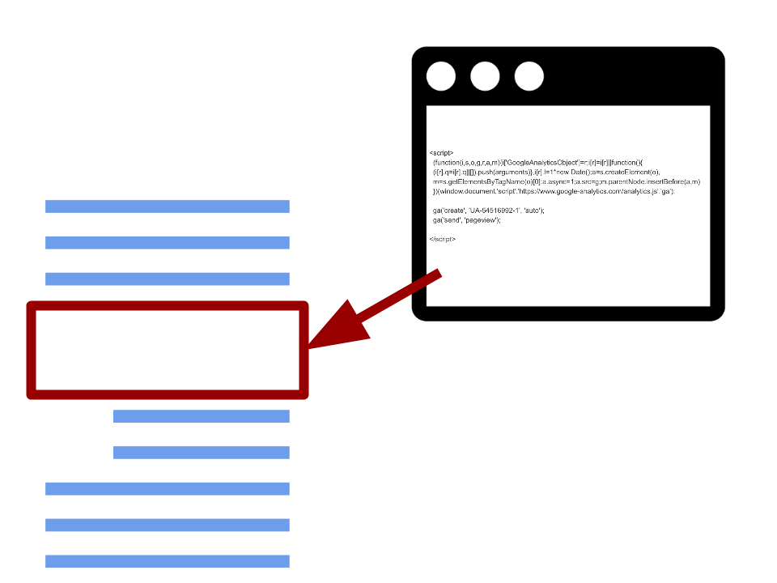
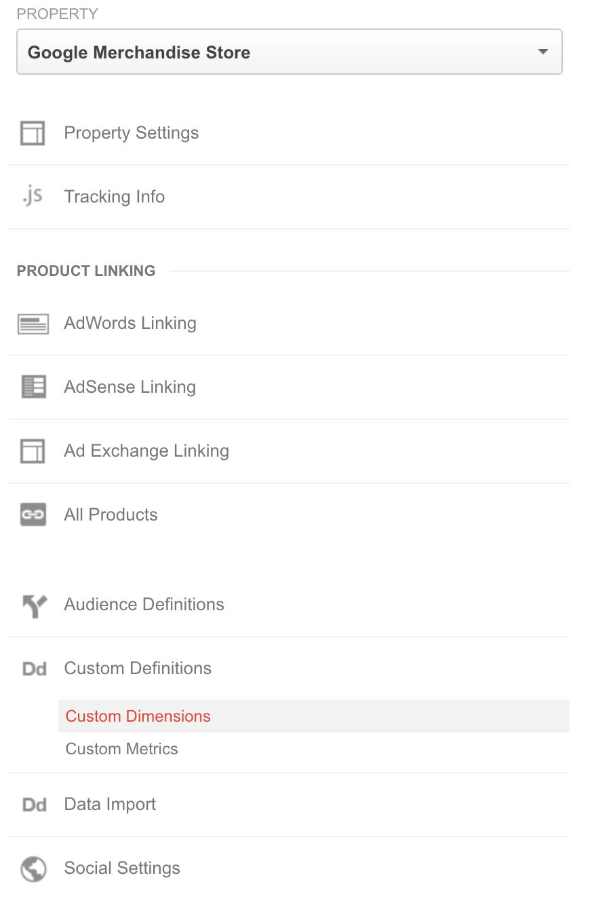
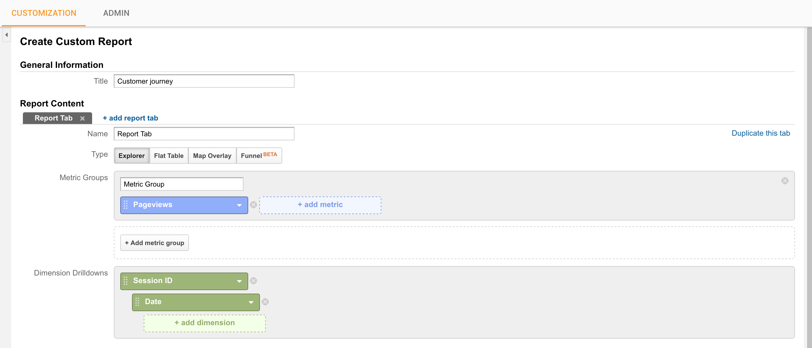

Web Analytics isn't boring!
Wed. 19th Oct 2016
What is digital analytics?
- Monitor business KPI's
- Understand your customer (360)
- Predict / Personalise base on metrics
Where can I learn Digital Analytics?
The Internet
- Everything is available at a click of a button
- Everyone is connected 24/7
- Diffusing on the internet is always easier and cheaper
Thousands of touch points
Customers' footprints are
- Trackable
- Collectable
- Analysable
Case of a e-business
Touch points
- Landing on the website
- Opening a page
- Clicking on a button
- Filling a form
- Filtering the results
- Scrolling
- ...
Case of a e-business
Questions
- Where your customer is coming from?
- What does (s)he like on your website / app?
- Did (s)he purchase? Or why didn't (s)he purchase?
- How many products did (s)he see before converting?
Digital analytics is answering these questions with these touch points
Why did we (Sephora) choose GA?
- Interface not too complicated to use
- Not too complicated to implement: api well documented
- It tracks everything we need!
First tip
Dissociate your tracking plan from your IT
- Avoid opening tickets every time you need a new pixel to be implemented
- Don't wait the next (non-rolled-back) release to start collecting insights
- Build your own playground
What is a tag manager?
What if you could edit your website source code directly?
That's your website HTML code

Let's create a container inside

You can publish code directly to this container
From a dedicated platform

Advantages
- No IT
- No waiting time
- Test your code directly on the production website
Problem
How to track your customer journey?
Create 2 custom dimensions

Build a custom report

That does not link to my customers
True, but...
- You can always add other custom dimensions to your tracking, with CRM info
- Age, Gender, User ID, Hashed email, ...
- Never send emails / phone numbers / names
Applications
- Customer service can use it/li>
- CRM
- ML engines
- ...
Problem
How quickly do our users find their seeked category?
Tracking method
- Track when a user hover the menu (long enough)
- Lauch a timer
- When a customer clicks on a category, stop the timer and send en event
- The event's value is the number in ms taken before choosing the category
Problem
How to track result pages displaying 0 result
Tracking method
- Add a custom dimension "Number of results"
- On each result page, send with the pagev hit the number of results
Track the visibility of your pages
Problem
How deep are going your users in your long pages?
Tracking method
- Listen the page scroll
- Send event every time a user reach specific page sections
- 0%, 25%, 50%, 75%, 100%
- "Picture", "Description", "Reviews", "Cross sell", "Footer"
Problem
Are some of your products lost in your website?
Tracking method
- Listen the page scroll
- Send an event when a product is reached
- GA: Use Enhanced ecommerce plugin
Problem
How can I track if my customers purchase offline?
Motivation
- Build unify dashboards
- When retargeting with GA segments
Tracking method
- Track your transaction as usual on your website
- Send a user ID in a custom dimension
- Send offline transactions using the measurement protocol (API)
- Use the same user ID
Web analytics is to be used, not only implemented
- Priorise tracking correctly few dimensions / metrics and use them
- Instead of tracking thousands of them with no one reading them
- Promote data driven decisions, and make numbers accessible
Try, try, try
- If you're here tonight, your work is to find these little tricks / tracking methods
- The easiest ones are also the ones which brings the more value